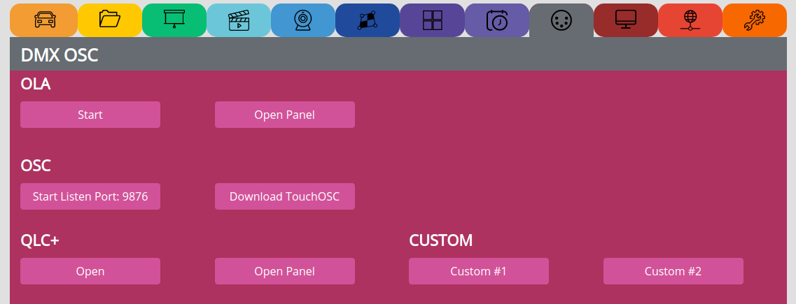
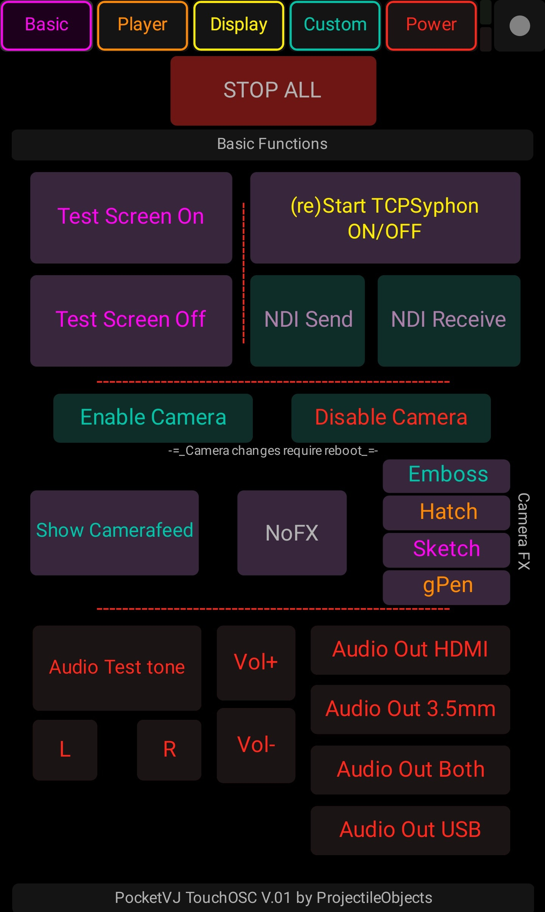

DMX OSC MIDI¶
see video tutorial: https://video.pocketvj.com/AVideo/video/24/dmx%C2%A0on-pocketvj-rtc
OLA¶
Start => Start OLA, this is necessary to activate DMX, ArtNet, sACN
Open Panel => Opens the seperate control panel to create Universes
OSC¶
Start Listen => Starts to listen for OSC commands on port 9876
List of OSC commands: https://github.com/magdesign/PocketVJ-CP-exh/blob/master/sync/osc_control.js
Download TouchOSC => Download the TouchOSC layout contributed by Cornelius Henke: https://github.com/magdesign/PocketVJ-CP-v3/raw/master/sync/PocketVJ_OSC.touchosc
{kind=link}
There are many tools on the market which can send OSC commands. For example OSCulator or QLAB. Make sure you are not blocked by a firewall if the command does not get through to the player
If you want to send commands from terminal (sudo apt install liblo-tools):
oscsend 192.168.2.100 9876 /pause
or sendosc for all platformas: https://github.com/yoggy/sendosc
sendosc 2.0.10.102 9876 /testscreen
QLC+¶
see video tutorial: